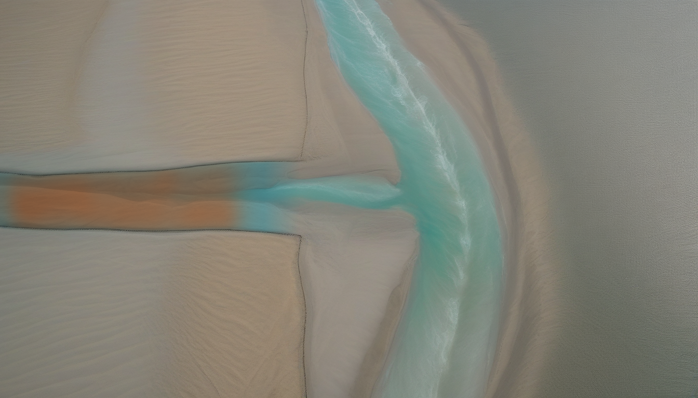
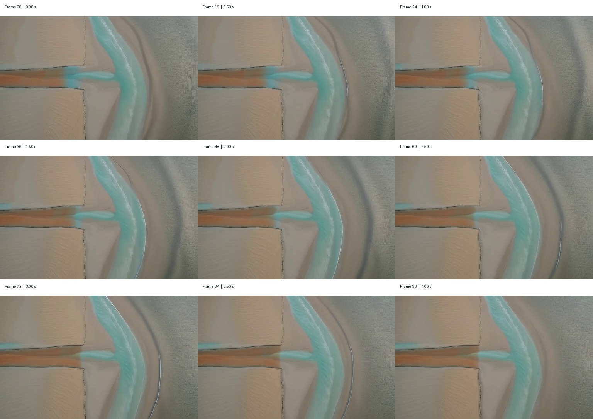

实际生成的视频
怎么看：重点检查镜头和岸线是否稳定、泥沙是否从左向右推进、
中间帧是否出现闪烁或凭空改变地形。模型同时生成了音轨，但本页默认静音播放。
这一版的判断
有效的部分
首尾帧约束生效，没有换场，也没有提前长出三角洲。 棕色泥沙前缘在 9 个采样时刻的位置依次是：
159 → 168 → 176 → 185 → 193 → 200 → 207 → 212 → 214 px
它累计向河口推进 55 px， 且每个采样间隔都没有倒退，因此不只是静止画面上的随机闪烁。
仍然不足
运动主要表现为柔和的棕色浑水前缘， 没有形成可辨认的泥沙颗粒；水面纹理和岸边有轻微“呼吸感”。 512×320 的首次测试也偏软。这一版适合验证 FLF2V 路线，不应直接当最终成片。
输入的两张关键帧


模型实际生成的 9 个时间点

这次怎么生成
| 模型 | ltx-2.3-22b-dev-fp8.safetensors + distilled 1.1 LoRA |
| 流程 | ComfyUI 官方 LTX-2.3 First-Last-Frame to Video 结构 |
| 工作尺寸 | 512 × 320 |
| 长度 | 97 帧， 24 fps，约 4.04 秒 |
| 首尾引导强度 | 0.7 |
| 随机种子 | 20260728（只用于复现中间运动） |
| 生成耗时 | 3.92 分钟 |
| 相邻帧平均像素变化 | 0.4952 / 255；变化平缓，没有检测到突然跳帧 |
首尾相似度不是质量裁判：
压缩和 VAE 重建会造成像素差异。首帧 MAE 4.018，
尾帧 MAE 3.13；仍需以实际画面判断岸线和泥沙位置。
提示词与复现文件
正向提示词
A fixed orthographic top-down aerial view of the exact same river, sandy coast, and blue-green sea shown in the supplied first and last frames. Preserve the geography, shoreline, riverbanks, framing, scale, natural daylight, and color palette. Only the water and suspended sediment move. A soft ochre-brown sediment cloud flows continuously downstream from left to right inside the river channel, with subtle fluid turbulence and small variations in concentration. Over the shot the sediment front advances smoothly from the middle-lower river and reaches the river outlet at the coast in the final frame. The camera remains completely locked. One continuous physically understandable scientific visualization. No sediment enters the open sea yet and no new delta land forms.
负向提示词
camera movement, pan, zoom, tilt, rotation, perspective change, oblique view, shoreline movement, changing riverbanks, terrain morphing, new channels, branching distributaries, completed delta, new land, offshore sediment plume, sediment moving upstream, abrupt cut, scene change, flicker, jitter, pulsing, boiling texture, frozen water, opaque mud, plastic CGI, text, labels, arrows, people, buildings, boats, watermark, blurry, low quality
复现命令：/workspace/comfyui-rocm-env/bin/python
-m modules.video_model.stage1.video_transition